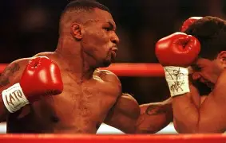
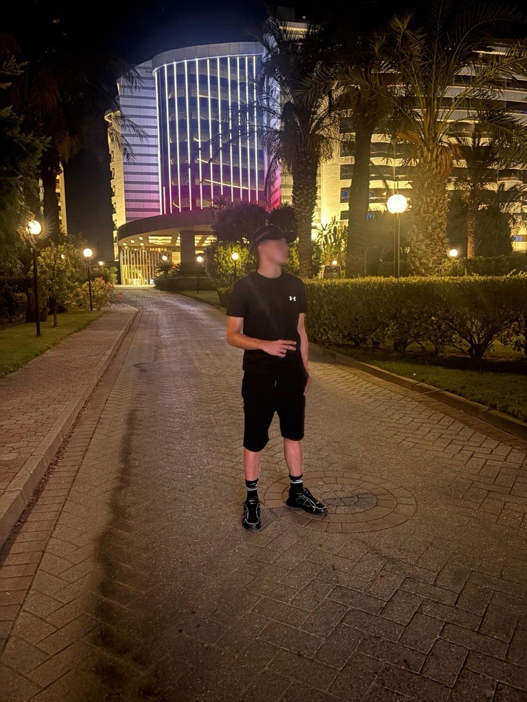
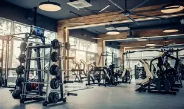

Hobby 01
Boxen
Ich mache es seit 3 Jahren und es macht mir spass ander personen zu schlagen
Ein bisschen persönlicher
In meiner Freizeit mache ich sehr viel mit meinen Freunden. Ich gehe auch 3 Mal die woche ins Boxtraining und 2 mal ins Gym. Fussball mache ich nur so nebenbei aber ich habe früher auch mal in einem Team gespielt

Kurz vorgestellt
Ich mache seit 3 Jahren Boxen. Ich bin sehr humorvoll und liebe es neue Menschen kennenzulernen.
Freizeit & Leidenschaft

Ich mache es seit 3 Jahren und es macht mir spass ander personen zu schlagen

Ich gehe ins Gym um mehr muskeln zu bekommen
Ich spielte Fussball aus spass und wegen Freunden. Ich war sehr gut aber ich habe denn spass daran verloren.